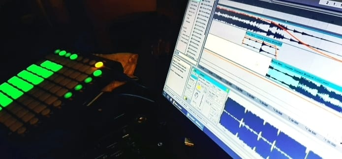

Ingresar
"La música es una forma universal de expresión que trasciende las barreras del lenguaje y conecta a las personas en un nivel emocional profundo. Desde las melodías suaves que calman el alma hasta los ritmos enérgicos que hacen vibrar nuestros cuerpos, la música nos acompaña en cada momento de nuestras vidas. Nos transporta a diferentes lugares y épocas, evocando recuerdos y emociones que de otra manera podrían permanecer ocultos. A través de sus notas y letras, la música tiene el poder de inspirar, consolar, motivar y unir a comunidades enteras. Es un arte que nos desafía a explorar nuevos sonidos, a descubrir nuevas perspectivas y a celebrar la diversidad de la experiencia humana.